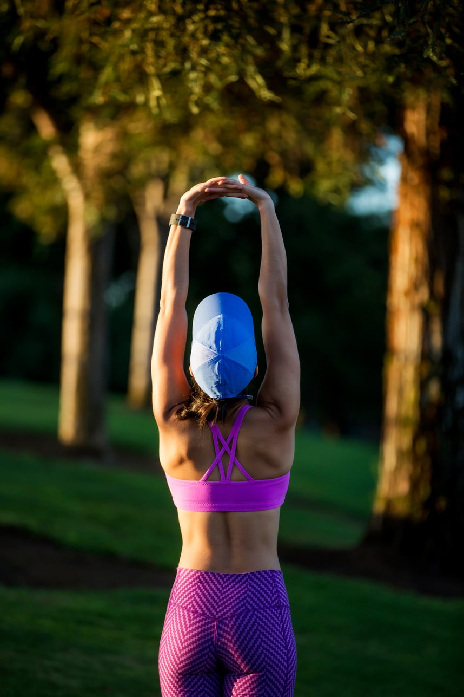
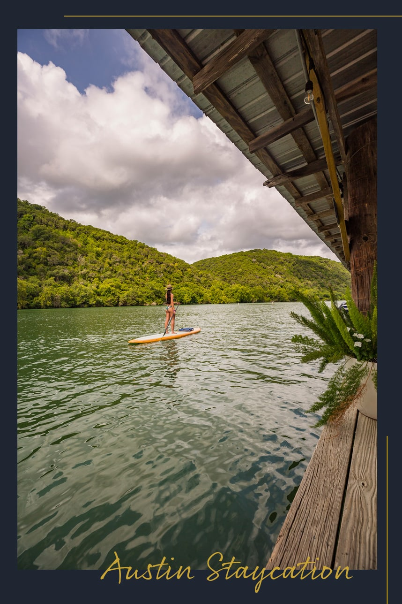

Habits. They are the things that we repeatedly do. There are good habits, bad habits, and habits that you don't even think about anymore, like brushing your teeth, they are automatic.
The recent travel changes with COVID has brought us to look closer when it comes to vacations and long weekends. With countries and states requiring mandatory quarantining, we looked at what is available in our backyard for an Austin staycation.
